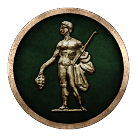
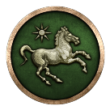
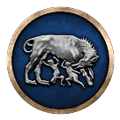
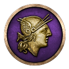

Factions you cannot play
None of these can be picked when you start a campaign. The computer runs them; where a revolt lets you take over its rebels, the revolt's page says so.
| Faction | What it is | Faction | What it is | Faction | What it is | Faction | What it is |
|---|---|---|---|---|---|---|---|
| Settlements that belong to no faction. They hold 107 regions at the start of the campaign. |  Hellenistic Rebels | Holds no land at the start of the campaign, and no revolt creates it. | Ptolemaic Rebels | Holds no land at the start of the campaign, and no revolt creates it. |  Roman Rebels | Holds no land at the start of the campaign, and no revolt creates it. | |
 Roman Rebels | Holds no land at the start of the campaign, and no revolt creates it. |  Roman Senate | Holds no land at the start of the campaign, and no revolt creates it. | Seleucid Rebels | Holds no land at the start of the campaign, and no revolt creates it. | Seleucid Rebels | Holds no land at the start of the campaign, and no revolt creates it. |